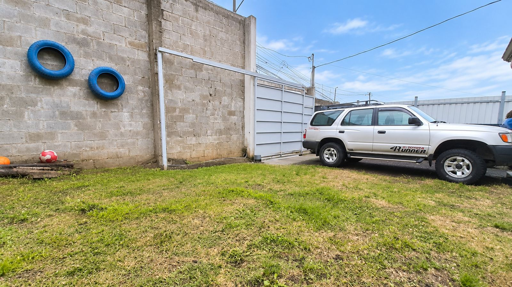
02 Zona verde frontal y parqueo
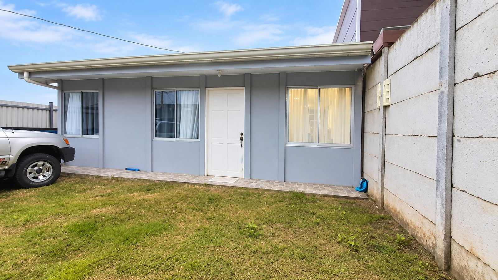
Si busca una propiedad lista para habitar, con espacioso terreno, excelente estado de conservación y ubicada en una zona segura y tranquila, esta puede ser la oportunidad ideal. Céntrica ubicación en San Jerónimo, muy cerca de comercios, transporte público y servicios.

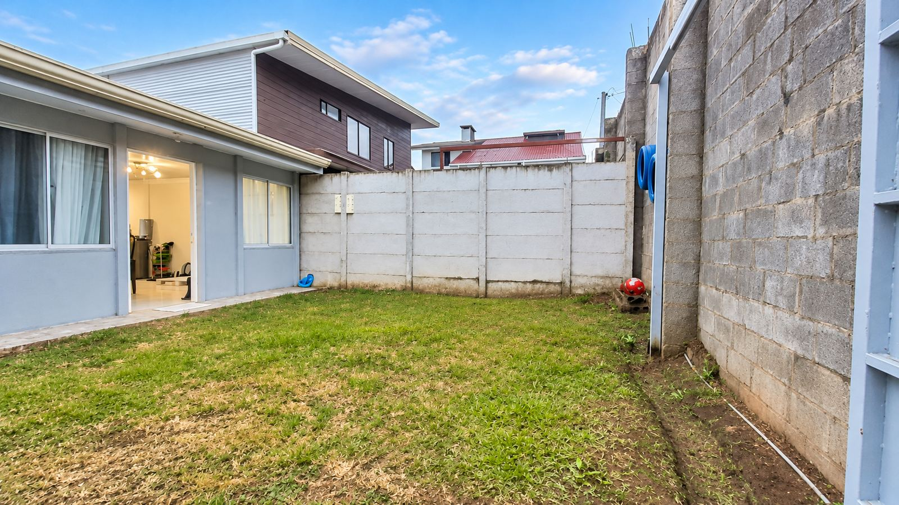
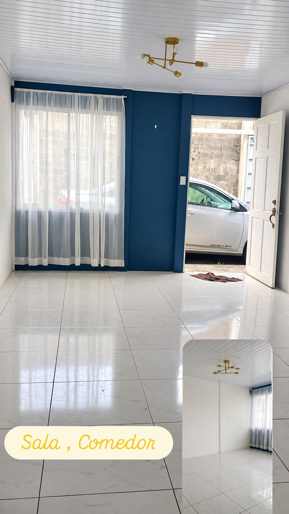
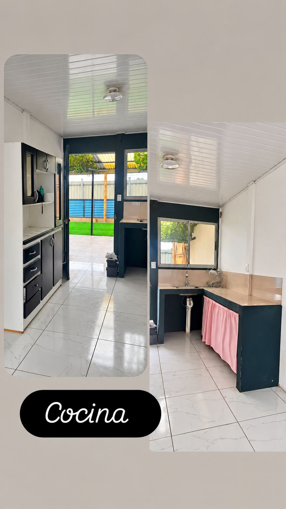
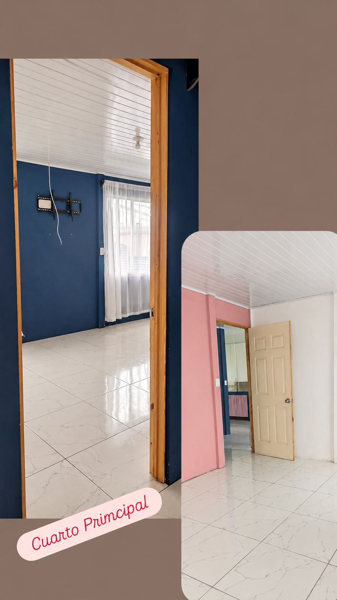
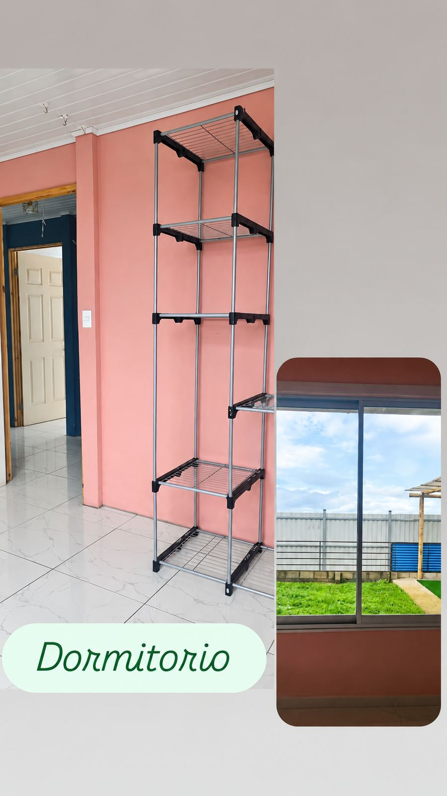
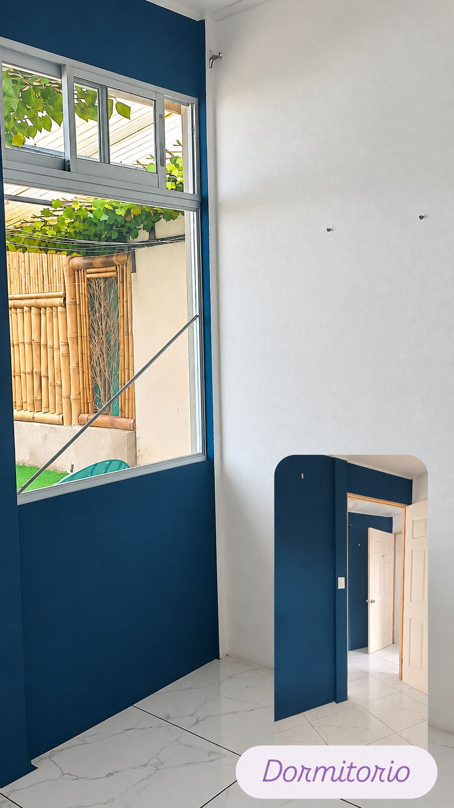
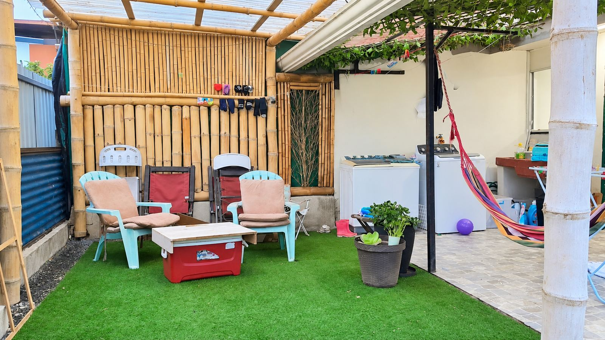
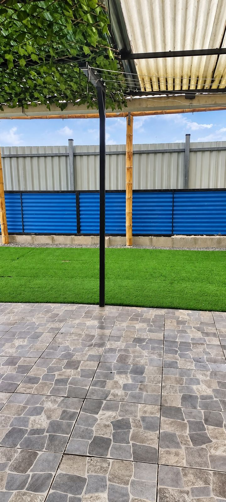
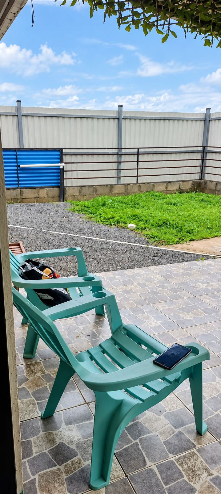
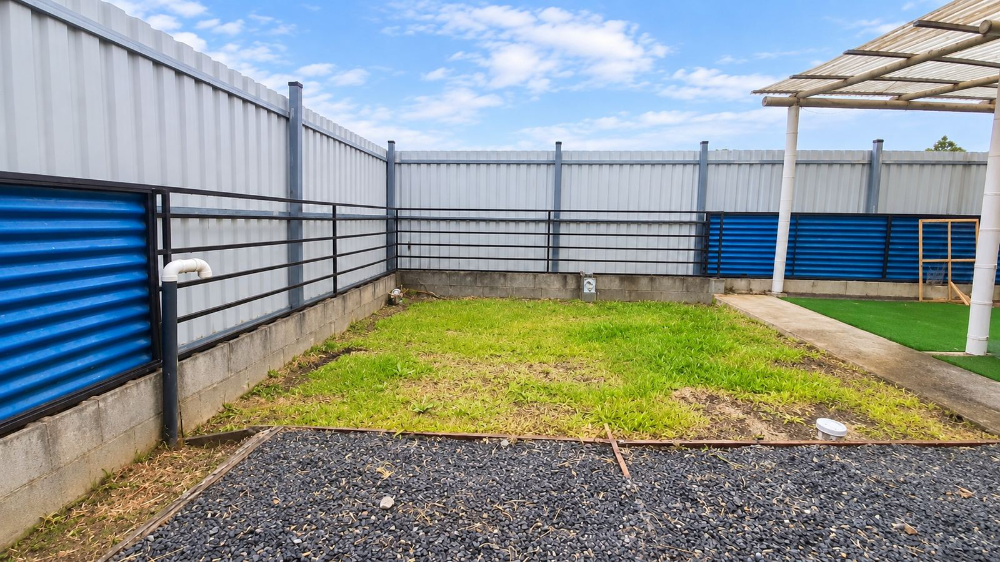
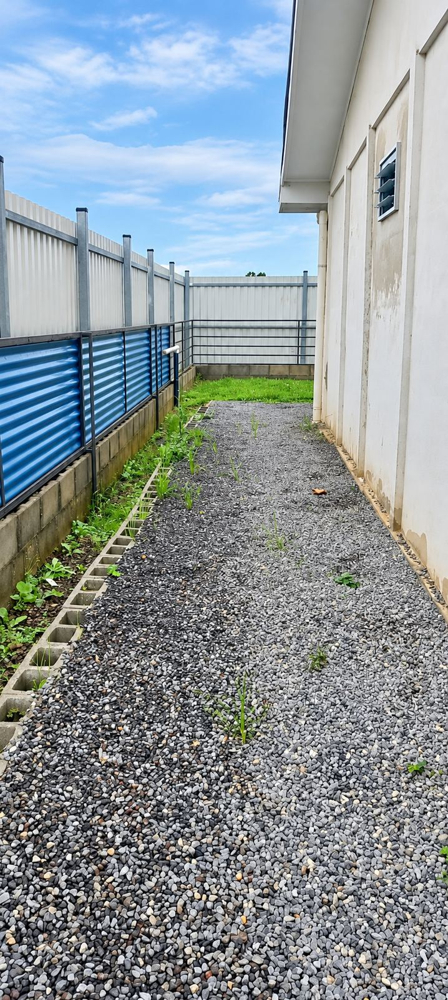